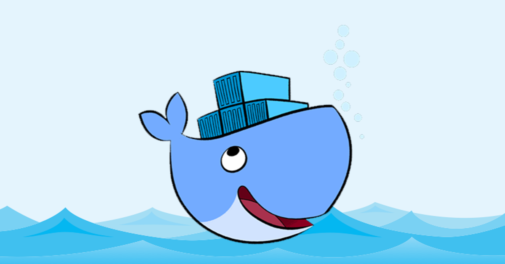
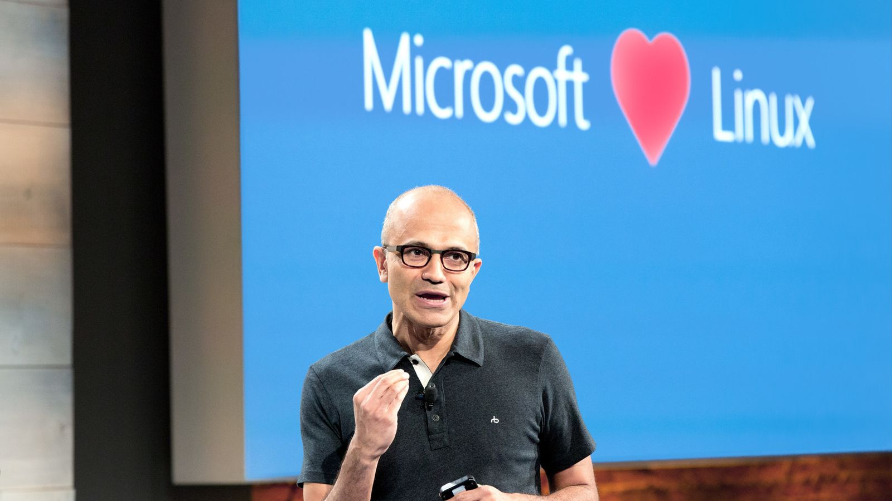
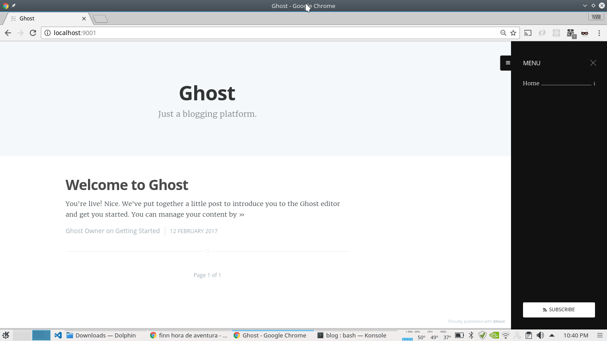

Docker o que é?

Há algum tempo estou pesquisando e utilizando o Docker em alguns "labs". Para quem não conhece o Docker, trata-se de uma plataforma Open Source para empacotar serviços, aplicações, micro serviços e ambientes. A plataforma segue três princípios (Build, Ship e Run).
Build
O Docker possibilita a composição de uma aplicação, de serviços ou micro serviços, sem se preocupar com as inconsistências entre os ambientes de desenvolvimento, aceitação e produção. Evitando aquele cenário pouco conhecido como "Na minha máquina funciona" ou "Isso é problema de infraestrutura";
Ship
Leva o ciclo de desenvolvimento, teste e entrega de software a um nível consistente e seguro onde dificilmente encontraremos um cenário de risco como "Não funciona no servidor de produção".
Run
Oferece a capacidade de implantar serviços escaláveis, com segurança e confiabilidade em uma variedade de plataformas.
Vamos pensar um pouco, imagine um cenário de e-Commerce no dia do Blackfriday, onde servidores ficam beirando os 100% CPU e RAM. Neste cenário podemos projetar o Docker com uma solução, pois facilmente seria lançado um Docker Container como redundância, da aplicação, do serviço ou micro serviço, claro se houver processamento e memória disponível para esta redundância. Após o período de alto consumo, a redundância pode ser descartada, projetando os custos de acordo com a demanda, claro levando em consideração que o preço é pago por consumo.
Chega de introdução vamos a prática!
Instalando o docker
- Adicione o repositório oficial do Docker.
curl -fsSL https://apt.dockerproject.org/gpg | sudo apt-key add -
- Verifique se a chave
58118E89F3A912897C070ADBF76221572C52609Dfoi inserida:
apt-key fingerprint 58118E89F3A912897C070ADBF76221572C52609D
- Atualize os índices de pacotes
sudo apt-get update
- Instale o pacote docker-engine
sudo apt-get -y install docker-engine
- Após a instalação o Docker cria um "container"
hello-world, digite o comando abaixo para validar a instalção.
sudo docker run hello-world
Esperamos uma mensagem assim:
Hello from Docker!
Caso você não esteja utilizando uma distribuição Ubuntu style, sorry, siga as instruções da página abaixo e selecione sua distribuição:
https://docs.docker.com/engine/installation/
Criando seu primeiro Docker Container
Graças ao DockerHub, podemos baixar containers devidamente publicados, configurados e prontos para uso, desde Unix, distribuições Linux até Windows Server 2016, isso mesmo Windows lembra?

Iremos configurar o container com o Ghost Blog, que é uma excelente ferramenta para criação de blogs minimalista, desenvolvida em NodeJS e compatível com os bancos de dados MySQL e SQLite, que utiliza a sintaxe Markdown, muito conhecida pelos entusiastas de GitHub, ops chega de lero lero, siga as instruções abaixo.
O arquivo Dockerfile
Primeiramente iremos configurar um container baseado em container existente no DockerHub. Para que a magia seja feita, informamos o container ou imagem baseada e outras configurações como diretório de execução, que será utilizado para compartilhar informações com o host do Docker, isso mesmo o container consegue enviar e receber informações.
Pronto segue abaixo o arquivo de configuração Dockerfile.
FROM ghost
MAINTAINER seunome@seudominio.com.br
VOLUME ["/var/lib/ghost"]
EXPOSE 2368
CMD ["npm", "start"]
- FROM - Docker Container base para compilação;
- MAINTAINER - e-mail do responsável por este novo Docker Container;
- VOLUME - diretório a ser compartilhado entre o host;
- EXPOSE - portas que serão abertas ou expostas para consumo;
- CMD - comandos que serão executados ao rodar o Docker Container;
Para outras informações, veja o guia completo:
https://docs.docker.com/engine/reference/builder/
Crie uma pasta para manter os arquivos relacionados ao Docker Container e crie o arquivo Dockerfile, que será utilizado para compilar o Container customizado.
Arquivo build
Crie um arquivo chamado build na mesma pasta e estrutura do Dockerfile, segue abaixo o conteúdo do arquivo build.
- Conteúdo do
./build
sudo docker build -t ghost .
- Execute os comandos abaixo para permitir e executar o arquivo;
chmod +x build ./build
Aguarde até receber a mensagem de sucesso:
Successfully built ...
Execute o comando abaixo para validar se o Docker Container está na lista de imagens disponíveis.
sudo docker images
Você deve encontrar uma imagem chamada ghost, este nome foi informado no script build.
REPOSITORY TAG IMAGE ID CREATED SIZE
ghost <none> 066a22d980f4 10 days ago 326 MB
Executando o Docker Container
-
Conteúdo do
./run -
Crie um arquivo com o nome
runcom o conteúdo abaixo, na mesma pasta e estrutura;
sudo docker run --name cpp-ghost -v `pwd`/content:/var/lib/ghost -p 9001:2368 -d ghost
Desvendando o comando docker run:
-
--name- alias utilizado para criação do Docker Container; -
-p- utilizado para fazer oport forwarding, a porta 9001 do host redireciona para porta 2368 do Docker Container, isto quer dizer que a magia começa por aqui, o acesso nohttp://localhost:9001redireciona para o container; -
-d- indica qual imagem será utilizada, neste caso a imagemghost; -
-v- indica o path para montagem do caminho virtual, assim podemos acessar os arquivos de conteúdo gerados dentro do container o aliaspwdfoi utilizado para tornar o caminho relativo em absoluto. -
Execute os comandos abaixo para permitir e executar o arquivo
run;
chmod +x run ./run
Ghost rodando

Entre na página de configurações, para personalizar o Blog e desfrutar dessa excelente plataforma.
http://localhost:9001/ghost/setup/
Parando a execução e removendo a imagem
Para finalizar a execução do container, digite o comando abaixo.
sudo docker stop cpp-ghost
Referência: https://docs.docker.com/engine/reference/commandline/stop/
Para remover o container, digite o comando abaixo:
sudo docker rm cpp-ghost
Referência: https://docs.docker.com/engine/reference/commandline/rm/
Para confirmar se o container foi removido digite o comando abaixo para verificar todos os containers disponíveis:
sudo docker ps -a
Referência: https://docs.docker.com/engine/reference/commandline/ps/
Agora se você deseja excluir a imagem ghost criada e liberar algum espaço no seu Winchester como diria o meu Avô rsrs, digite o comando abaixo:
sudo docker rmi ghost
Referência:
https://docs.docker.com/engine/reference/commandline/rmi/
Para conferência da exclusão digite o comando:
sudo docker images
Referência: https://docs.docker.com/engine/reference/commandline/images/
Até a próxima
Pronto mais fácil que compilar o Kernel do Linux;